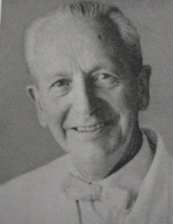

|  |
Amsler grid = Chart used to detect or document macular diseases

Amsler grid through an eye with macular degeneration. |
Amsler's sign = Haemorrhage caused by applanation tonometry and
cataract
surgery in Fuch's heterochromic iridocyclitis (FHI). It was once thought
to be pathognomonic for FHI, was previously used as a diagnostic and confirmatory
test in patients with suspected FHI
Marc Amsler was a student of Jules Gonin at the University of Lausanne and an exponent of Gonin's ideas about retinal detachment repair. He succeeded Gonin in 1935 as chair of ophthalmology at Lausanne, and in 1944 became professor at the University of Zurich. He pioneered in the study of aqueous humor in uveitis and developed an interest in how to monitor macular symptoms in retinal disease. It seems likely that Amsler got the idea for his patterns from a small card with a grid pattern that Landolt designed to place in the center of his perimeter to test the macula. Several devices had been invented and manufactured by the first half of the 20th century for the testing of small macular scotomas, but these required an examiner to move tiny test objects across the grid, sometimes within a stereoscope for greater precision. These instruments were not so easy to use, and of course did not document metamorphopsia. Landolt may have intended to describe his test card in print, but he never did, and his plans for the card are not known. It appears to have been Amsler's idea to take the grid out of the perimeter and use it as an independent test, and in doing so Amsler experimented extensively with different patterns and different colors of grid design. The authors of one article have stated without references that Amsler was working on grids as far back as the 1920s, but Alfred Huber, a renowned Swiss ophthalmologist who was a resident with Amsler in Zurich, has written that he was actively designing the grids in the period between 1944 and 1952. Huber states that Amsler was "the first to draw attention to the possibility of this test which still today fortunately has kept its value in a wonderful way."
Reference:
Amsler M, Verrey F: Heterochromie de Fuchs et fragilite vasculaire.Ophthalmologica 111:177, 1946.